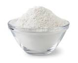
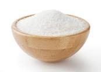
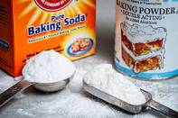
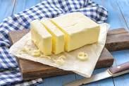
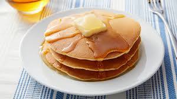

| Ingredient Name | Amount | Picture of Ingredient |
| Egg | 1 | |
| Flour | 1 cup |  |
| Sugar | 1 tablespoon |  |
| Baking Powder | 3 teaspoons |  |
| Salt | 1/4 teaspoon | |
| Milk | 3/4 cup | |
| Butter | 2 tablespoons |  |
| Start with whisking the egg in a bowl. After that, mix and stir the other ingredients in the bowl. Pour roughly a quarter of the batter (pour less or more depending on the desired size) on a skillet or griddle at 375F. Let cook for around 2 to 3 minutes, then flip onto the other side. Once the other side is golden brown, it is ready to eat. | ||
|  | ||